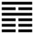

Hỏa Địa Tấn (晉 jìn)
Đã tráng thịnh thì tất nhiên phải tiến lên, cho nên sau quẻ Đại tráng tới quẻ Tấn [晉], Tấn có nghĩa là tiến [進] lên.
Thoán từ:
晉: 康侯用錫馬蕃庶, 晝日三接．
Tấn: Khang hầu dụng tích mã phồn thứ, trú nhật tam tiếp.
Dịch: tiến lên, bậc hầu có tài trị nước được thưởng ngựa nhiều lần, ban ngày được tiếp tới ba lần.
Giảng: Quẻ này có tượng mặt trời (ly) lên khỏi mặt đất (Khôn), càng lên cao càng sáng, tiến mạnh.
Lại có thể hiểu là người dưới có đức thuận (Khôn) dựa vào bậc trên có đức rất sáng suốt (☲); cho nên ví với một vị hầu có tài trị dân (Khang hầu) được vua tín nhiệm, thưởng (tích) ngựa nhiều lần, nội một ngày mà được vua tiếp tới ba lần.
Thoán truyện giảng thêm: quẻ này hào 5 có cái tượng một hào âm nhu tiến lên địa vị vua chúa: nhu tiên nhi thượng hành. Theo Chu Hi, như vậy là vì quẻ Tấn do quẻ Quán biến thành: hão quẻ Quán là âm, nhảy lên trên, thành 5 quẻ Tấn. Phan Bội châu hiểu khác: hào 5 vốn là hào dương giữa quẻ Càn, biến thành hào âm ở giữa ngoại quái Ly của quẻ Tấn. Theo tôi, cách hiểu của Chu Hi dễ chấp nhận hơn.
Đại tượng truyện khuyên người quân tử xem tượng quẻ Tấn này nên tự làm cho đức của mình càng ngày càng sáng như mặt trời hiện lên khỏi mặt đất rồi tiến mãi lên.
Ý nghĩa các hào:
1.
初六: 晉如, 摧如, 貞吉, 罔孚, 裕. 无咎．
Sơ lục: tấn như, tồi như, trinh cát, võng phu, dụ, vô cữu.
Dịch: Hào 1 âm: : muốn tiến lên mà bị chắn lại, giữ đạo chính thì tốt; nếu người chẳng tin mình thì nên khoan thai, bình tĩnh, như vậy sẽ không có lỗi.
Giảng: Âm nhu ở dưới cùng, ứng với hào 4, mà 4 lại bất trung, bất chính, nên chẳng giúp mình được gì, mình muốn tiến lên mà như thể bị chặn lại. Trong hoàn cảnh đó, nếu có người không tin mình thì mình chỉ nên khoan thai, bình tĩnh tu thân là sẽ không có lỗi.
2.
六二: 晉如, 愁如, 貞吉; 受茲介福于其王母．
Lục nhị: Tấn như, sầu như, trinh cát;
Thụ tư giới phúc vu kì vương mẫu.
Dịch: Hào 2, âm: Tiến lên mà rầu rĩ, giữ đạo chính thì tốt; sẽ được nhờ phúc lớn của bà nội.
Giảng: Hào này có đức trung chính, đáng lẽ tiến lên được nhưng trên không có người ứng viện (vì hào 5 cũng âm nhu như 2), phải tiến một mình, nên rầu rĩ. Nhưng cứ giữ đạo chính thì chẳng bao lâu sẽ gặp cơ hội tốt: hào 5 ở trên, cũng là hào âm như mình, tuy không giúp được mình trong công việc, nhưng cũng đắc trung như mình, sẽ ban phúc lớn cho mình, và mình sẽ được nhờ hào 5 như được nhờ phúc của bà nội (vương mẫu tức như tổ mẫu) mình vậy.
Sở dĩ ví hào 5 với bà nội vì 5 là âm mà ở trên cao, cách 2 khá xa.
3.
六三: 眾允, 悔亡．
Lục tam: chúng doãn, hối vong.
Dịch: hào 3, âm: mọi người tin cẩn, thì mọi sự hối tiếc sẽ mất đi.
Giảng: hào âm này ở trên cùng nội quái Khôn, bất trung chính, đáng lẽ có điều hối hận, nhưng có hai hào âm ở dưới đều muốn tiến lên với mình, đều tin mình, mình được lòng họ, thì còn gì phải hối tiếc nữa đâu?
4.
九四: 晉如, 鼫鼠, 貞厲．
Cửu tứ: Tấn như, thạch thử, trinh lệ.
Dịch: hào 4, dương : tiến lên, tham lam như con chuột đồng, cứ giữ thói đó thì nguy.
Giảng: Hào này bất chính, bất trung, ở địa vị cao, tham lam muốn giữ ngôi mà lại sợ một bầy âm ở dưới dương hăng hái dắt nhau tiến lên, nên ví với con chuột đồng, vừa tham vừa sợ người.
Nếu nó giữ thói đó (trinh ở đây là bền vững chứ không phải là chính đáng, vì hào 4 vốn bất chính) thì sẽ nguy, bị tai hoạ mà mất ngôi.
5.
六五: 悔亡, 失得勿恤, 往吉, 无不利．
Lục ngũ: hối vong, thất đắc vật tuất, vãng cát, vô bất lợi.
Dịch: Hào 5, âm: không có gì ân hận cả; nếu đừng lo được hay mất, mà cứ tiến thì tốt, không gì là không lợi.
Giảng: Hào này làm chủ quẻ Tấn, có đức sáng suốt (vì ở giữa ngoại quái Ly), lại được ba hào âm ở dưới thuận giúp mình, nên không có gì phải ân hận.
Nhưng nó là âm nhu, e có lòng ham được, sợ mất, cho nên Hào từ khuyên thành bại chẳng màng, cứ giữ đức sáng suốt thì sẽ thành công.
6.
上九: 晉其角, 維用伐邑, 厲吉, 无咎, 貞吝．
Thượng cửu: Tấn kì giác, duy dụng phạt ấp, lệ cát, vô cữu, trinh lận.
Dịch: Hào trên cùng, dương: chỉ tiến cặp sừng thôi, lo trị cái ấp riêng của mình thôi thì dù có nguy, kết quả cũng tốt, không tội lỗi, nhưng dù được điều chỉnh thì cũng đáng thẹn.
Giảng: Dương cương mà ở trên cùng quẻ Tấn, có nghĩa là cứng đến cùng cực, mà ham tiến cũng cùng cực, không khác con thú hung hăng chỉ húc bằng cặp sừng. Như vậy không làm được việc lớn, chỉ giữ được cái vị của mình, như trị được cái ấp riêng của mình thôi, dù có nguy thì cũng vẫn thành công đấy. Có điều là ở thời đại Tiến lên mà chỉ làm được vậy, chứ không thành sự nghiệp lớn thì cũng đáng thẹn đáng tiếc.